企业级大模型部署从 0 到 1：租 GPU 服务器 → Ubuntu → Docker → Qwen → vLLM → Spring Boot
→ Ubuntu + Docker + NVIDIA 环境 → vLLM 推理服务（OpenAI 兼容 API）
→ 一个真实跑通的 Spring Boot 网关（非流式 + SSE 流式）
全流程总览
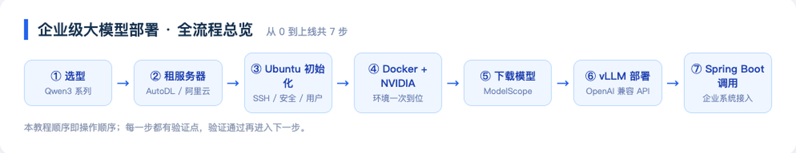
最终架构：用户 → Spring Boot 网关（鉴权/限流/审计）→ vLLM 推理服务 → GPU。vLLM 负责把模型变成高并发 HTTP 服务；Spring Boot 是企业业务的门面；GPU 只属于 vLLM。
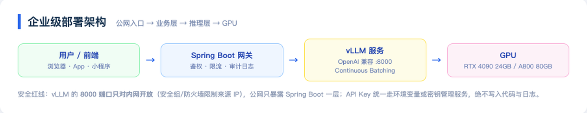
第一步：怎么选大模型
选型只看三个问题：你的场景是什么？你能装多大的模型？你有多少预算？
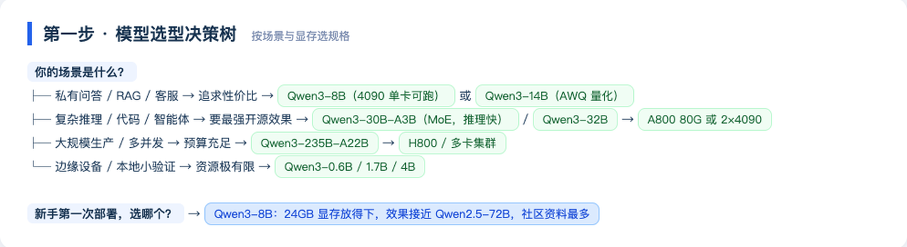
Qwen3 全系 8 个模型均为 Apache 2.0 协议开源、免费商用：
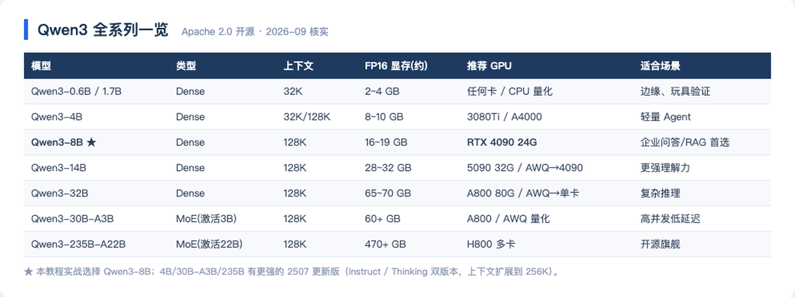
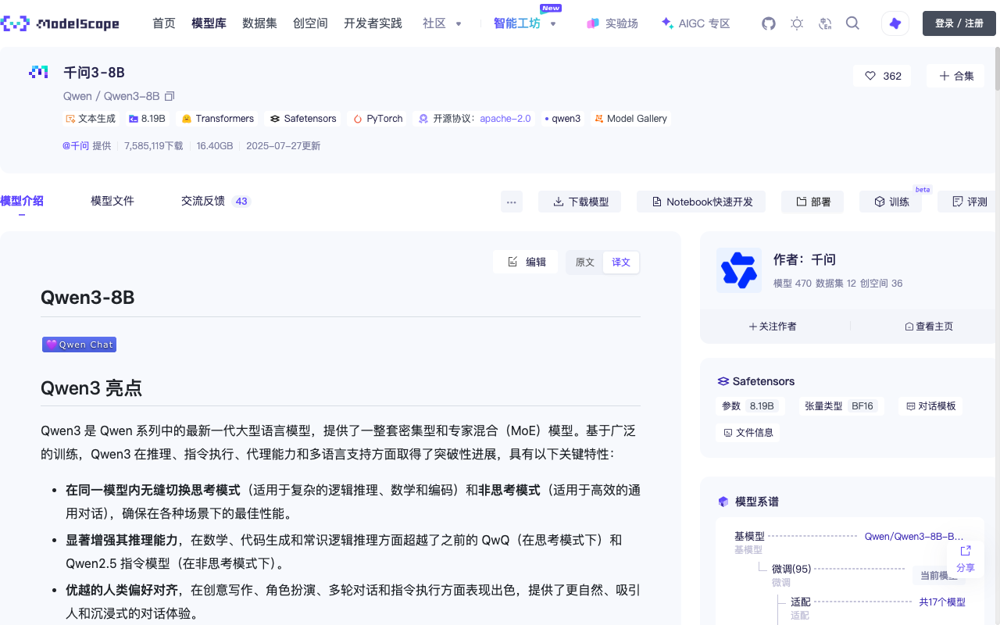
本教程选择 Qwen3-8B：16~19GB 权重刚好放进 RTX 4090 的 24GB 显存；效果接近上一代 72B；社区资料最多，踩坑成本最低。
动手前必须会算显存账：
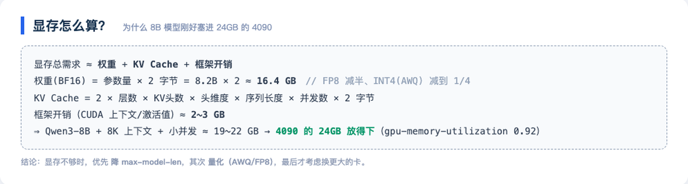
第二步：模型在哪下载
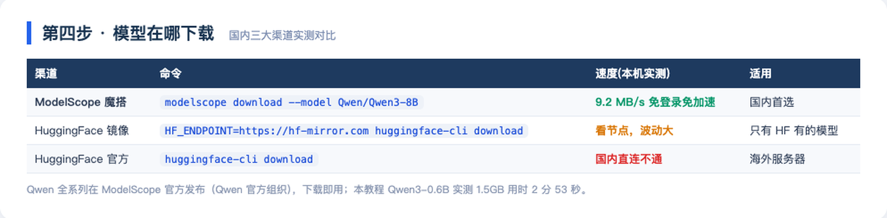
国内首选 ModelScope（魔搭）：Qwen 官方组织直接发布、无需账号、无需科学上网。本机实测下载 Qwen3-0.6B：
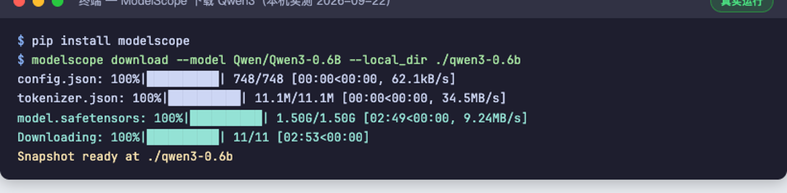
# 服务器上下载，直接落到数据盘
pip install modelscope
modelscope download --model Qwen/Qwen3-8B --local_dir /data/models/Qwen3-8B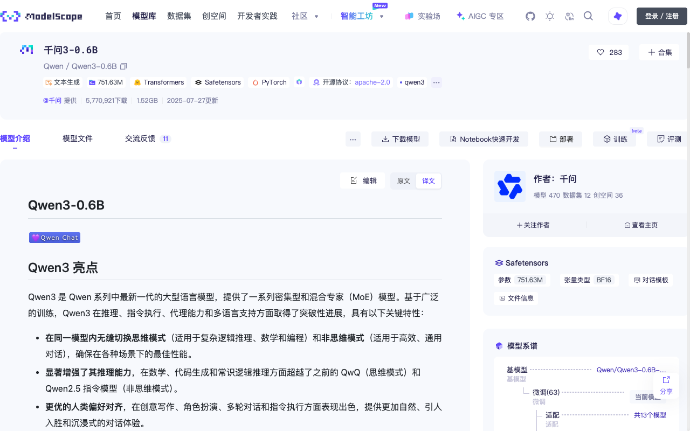
第三步：选什么服务器
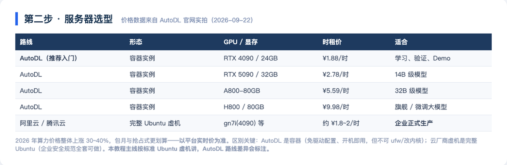
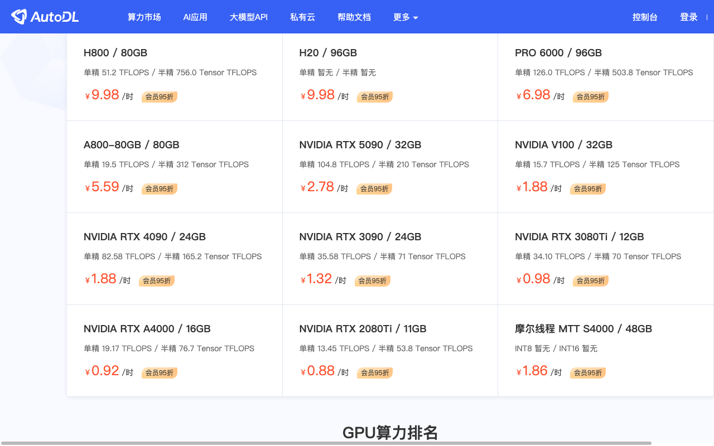
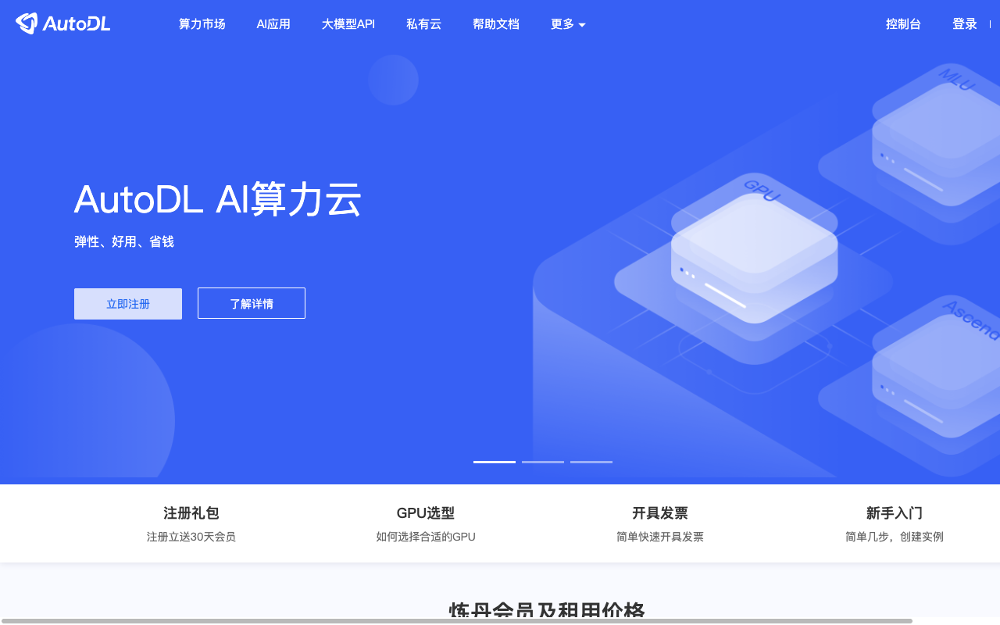
| AutoDL | 阿里云/腾讯云 GPU 虚机 | |
|---|---|---|
| 形态 | 容器实例 | 完整 Ubuntu 虚拟机 |
| NVIDIA 驱动 | 平台预装，开机即用 | 自己装或用预装镜像 |
| ufw/内核 | 不可改（容器限制） | 完整 root，企业安全规范可做 |
| 数据盘 | /root/autodl-tmp（释放前先备份） | 云盘可快照 |
| 计费 | 按需/包月，关机不收 GPU 费 | 按量/包月/抢占式 |
第四步：要花多少钱
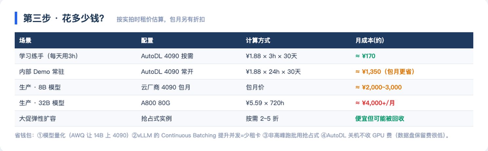
学习练手：AutoDL 4090 按需 ¥1.88/时 × 每天 3 小时 × 30 天 ≈ ¥170/月——比一顿火锅便宜。生产常驻按包月逻辑，8B 模型业务 ¥2,000~3,000/月起。
第五步：Ubuntu 初始化
租到服务器后拿到 IP + 端口 + 密码。首次登录（AutoDL 示例格式）：
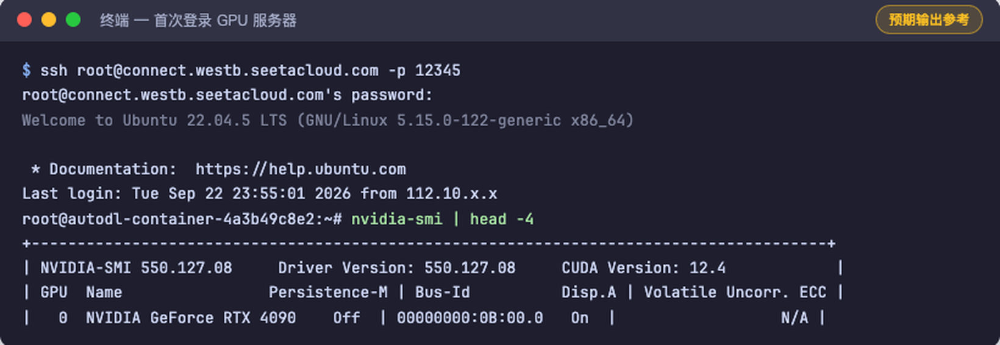
标准 Ubuntu 虚机做四件事（AutoDL 容器可跳过 ufw/新建用户）：
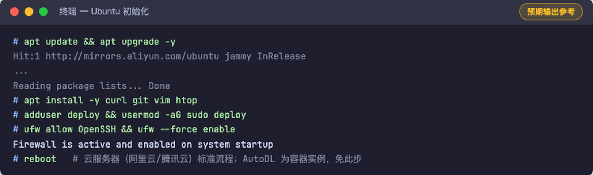
apt update && apt upgrade -y # 1. 系统更新
apt install -y curl git vim htop # 2. 基础工具
adduser deploy && usermod -aG sudo deploy # 3. 别拿 root 跑应用
ufw allow OpenSSH && ufw --force enable # 4. 防火墙（云厂商安全组另配）验证点：nvidia-smi 能看到 GPU 型号和驱动版本（AutoDL 开箱即有；自装用 apt install nvidia-driver-550 或厂商预装镜像）。
第六步：Docker + NVIDIA 环境
为什么用 Docker？版本地狱：CUDA、PyTorch、vLLM 版本强耦合，官方镜像已配好；升级/回滚 = 换个 tag。
# 1. 安装 Docker
curl -fsSL https://get.docker.com | sh
# 2. 安装 NVIDIA Container Toolkit
curl -fsSL https://nvidia.github.io/libnvidia-container/gpgkey \
| gpg --dearmor -o /usr/share/keyrings/nvidia-container-toolkit-keyring.gpg
curl -s https://nvidia.github.io/libnvidia-container/stable/deb/nvidia-container-toolkit.list \
| sed 's#deb https://#deb [signed-by=/usr/share/keyrings/nvidia-container-toolkit-keyring.gpg] https://#g' \
> /etc/apt/sources.list.d/nvidia-container-toolkit.list
apt update && apt install -y nvidia-container-toolkit
# 3. 注入 NVIDIA runtime 并重启
nvidia-ctk runtime configure --runtime=docker
systemctl restart docker
# 4. 验证：容器里能跑 nvidia-smi 就是通了
docker run --rm --gpus all nvidia/cuda:12.4.1-base-ubuntu22.04 nvidia-smi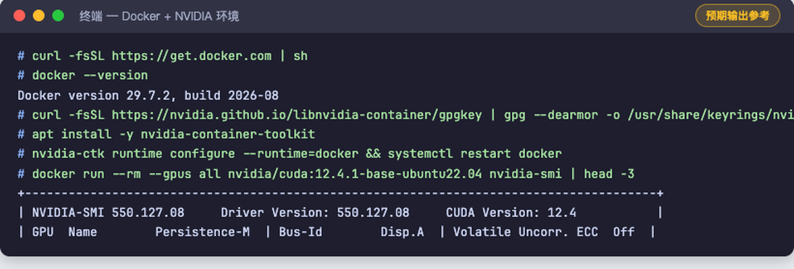
第七步：vLLM 部署 Qwen
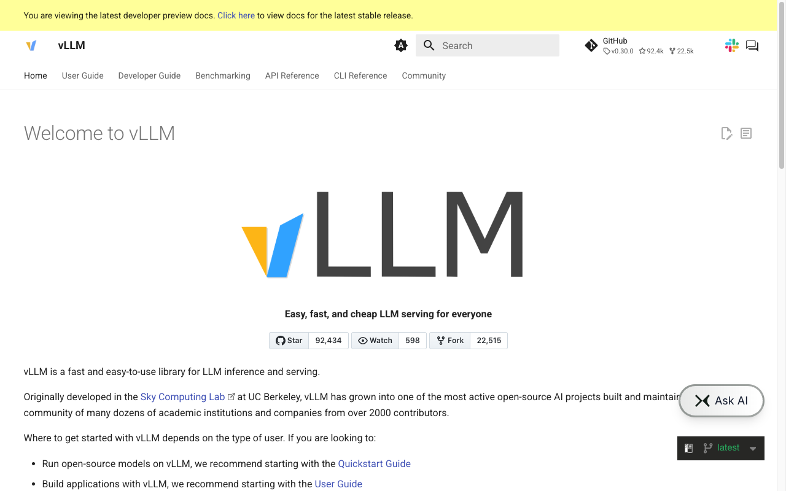
docker run -d \
--gpus all \
--restart unless-stopped \
--name vllm-qwen3 \
-v /data/models:/models \
-p 8000:8000 \
vllm/vllm-openai:v0.30.0 \
--model /models/Qwen3-8B \
--served-model-name Qwen3-8B \
--max-model-len 8192 \
--gpu-memory-utilization 0.92| 参数 | 含义 | 不设会怎样 |
|---|---|---|
| --gpus all | 把 GPU 给容器 | 容器看不见卡，直接报错 |
| -v /data/models:/models | 模型目录挂载 | 容器内找不到权重 |
| --served-model-name | API 里的 model 名 | 默认用路径名，客户端难写 |
| --max-model-len | 最大上下文 | 默认 128K 直接撑爆 24GB |
| --gpu-memory-utilization | 显存占用比例 | 保守默认浪费显存、降并发 |
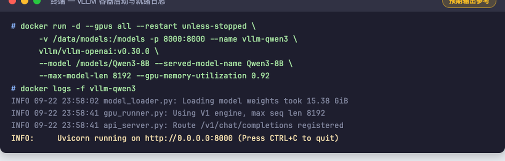
服务器本机验证——vLLM 原生提供 OpenAI 兼容 API：
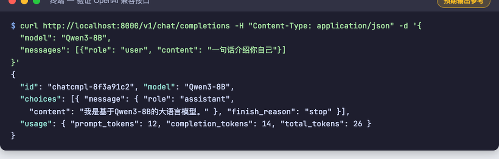
curl http://localhost:8000/v1/chat/completions \
-H "Content-Type: application/json" \
-d '{"model": "Qwen3-8B", "messages": [{"role":"user","content":"一句话介绍你自己"}]}'第八步：Spring Boot 调用
8.1 协议统一：整个教程最重要的一张图
vLLM 的 /v1/chat/completions 与 DeepSeek、通义、OpenAI 的协议完全一致——换供应商 = 改一行配置：
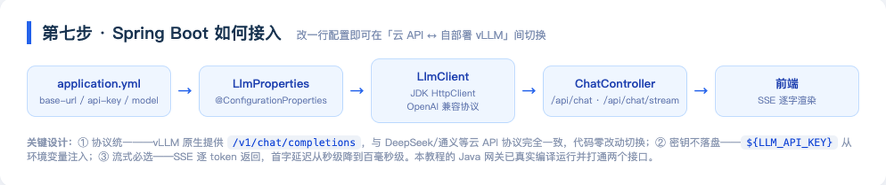
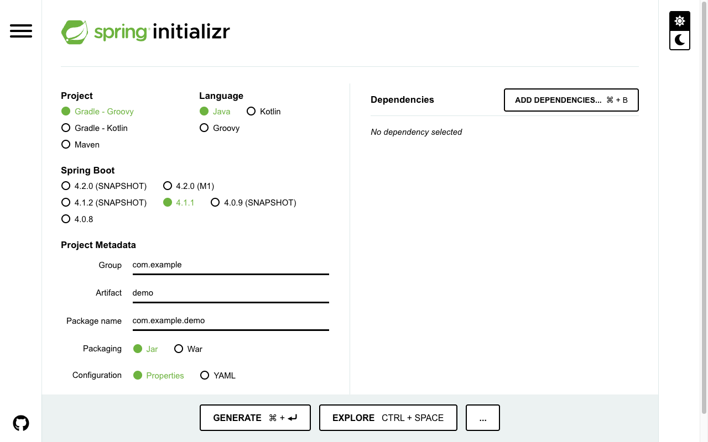
8.2 配置层：供应商无关
llm:
# 自部署 vLLM 上线时，只改这一行
base-url: ${LLM_BASE_URL:https://api.deepseek.com/v1}
api-key: ${LLM_API_KEY:} # 密钥只从环境变量注入
model: ${LLM_MODEL:deepseek-chat}
timeout-seconds: 60@ConfigurationProperties(prefix = "llm")
public record LlmProperties(String baseUrl, String apiKey,
String model, int timeoutSeconds) {}8.3 客户端：JDK 内置 HttpClient，不引 SDK
@Component
public class LlmClient {
private final LlmProperties props;
private final HttpClient http = HttpClient.newBuilder()
.connectTimeout(Duration.ofSeconds(10)).build();
private final ObjectMapper mapper = new ObjectMapper();
public LlmClient(LlmProperties props) { this.props = props; }
/** 流式：逐 delta 回调（SSE） */
public void stream(String userMessage, Consumer<String> onDelta) throws Exception {
ObjectNode body = buildBody(userMessage, true);
HttpRequest request = HttpRequest.newBuilder()
.uri(URI.create(props.baseUrl() + "/chat/completions"))
.timeout(Duration.ofSeconds(props.timeoutSeconds()))
.header("Content-Type", "application/json")
.header("Authorization", "Bearer " + props.apiKey())
.POST(HttpRequest.BodyPublishers.ofString(
mapper.writeValueAsString(body)))
.build();
http.send(request, HttpResponse.BodyHandlers.ofLines()).body()
.filter(line -> line.startsWith("data: "))
.map(line -> line.substring(6).trim())
.filter(payload -> !payload.equals("[DONE]"))
.forEach(payload -> {
try {
JsonNode delta = mapper.readTree(payload)
.path("choices").path(0).path("delta").path("content");
if (!delta.isMissingNode() && !delta.asText().isEmpty())
onDelta.accept(delta.asText());
} catch (Exception ignored) {}
});
}
// chat() 非流式版本结构相同，解析 choices[0].message.content
}8.4 接口层：非流式 + SSE 流式
@RestController
@RequestMapping("/api")
public class ChatController {
private final LlmClient llm;
@PostMapping("/chat")
public Map<String, Object> chat(@RequestBody Map<String, String> req)
throws Exception {
JsonNode resp = llm.chat(req.get("message"));
return Map.of(
"answer", resp.path("choices").path(0)
.path("message").path("content").asText(),
"model", resp.path("model").asText());
}
@GetMapping(value = "/chat/stream",
produces = MediaType.TEXT_EVENT_STREAM_VALUE)
public SseEmitter stream(@RequestParam String message) {
SseEmitter emitter = new SseEmitter(120_000L);
pool.execute(() -> { llm.stream(message, emitter::send);
emitter.complete(); });
return emitter;
}
}8.5 真实运行（本机实测）
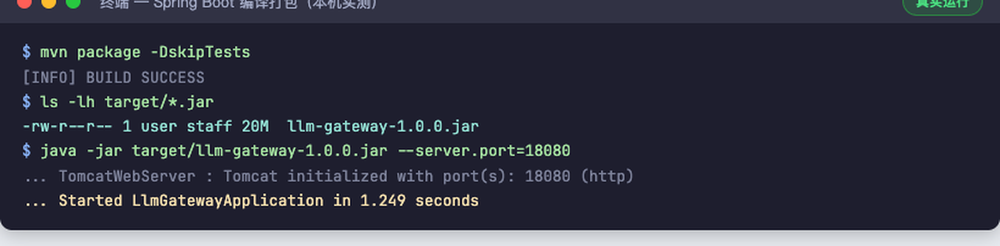
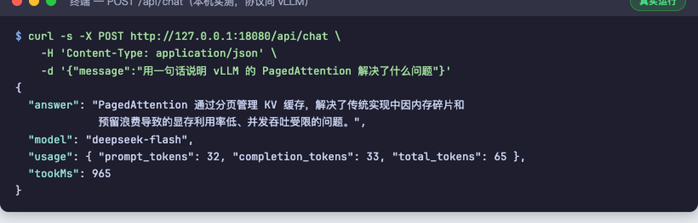
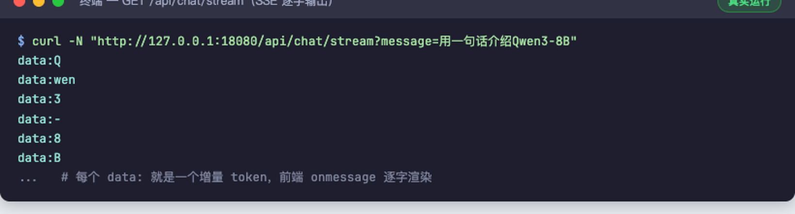
切到自部署 vLLM：export LLM_BASE_URL=http://<服务器IP>:8000/v1、export LLM_MODEL=Qwen3-8B，重启 Spring Boot，代码零改动。
企业级上线加固
| 维度 | 做法 |
|---|---|
| 网络隔离 | 8000 端口只对内网开放（安全组限制来源 IP），公网只暴露 Spring Boot |
| 鉴权限流 | 网关层 API Key 校验 + 每用户 QPS / Token 限额（Redis 计数） |
| 日志审计 | 请求、回答、耗时、Token 用量全量落库，敏感词过滤前置 |
| 健康检查 | vLLM /health 接 Docker healthcheck + K8s 探活 |
| 监控告警 | GPU 利用率 / 显存 / 并发数 → Prometheus + Grafana |
| 压测验收 | vllm bench serve 实测并发吞吐与首字延迟，达标再放量 |
| 版本回滚 | 模型目录带版本号，镜像 tag 固定，秒级切回 |
| 数据备份 | 模型盘定期快照；AutoDL 释放前务必备份 /root/autodl-tmp |
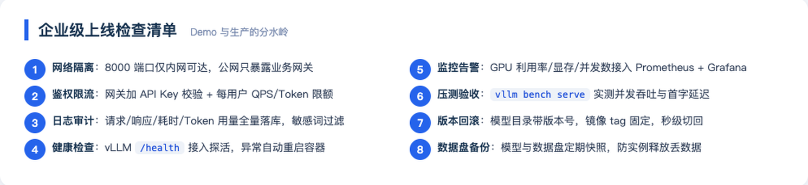
进阶：微调后的模型怎么上线
LLaMA-Factory 训练出 LoRA Adapter（见教程 03）
↓ merge-and-unload 合并回主干权重
完整模型目录（safetensors + config + tokenizer）
↓ 放到 /data/models/Qwen3-8B-java-interview
vLLM 换个 --model 路径重启
↓
业务无感知——API 协议一模一样，只是回答变聪明了微调实战详见本系列教程 03《第一次微调实战 Day1》。Day1 的 Colab 环境和企业部署共用同一套知识：模型目录结构、显存账、推理协议。
常见问题
Q：4090 能跑 14B/32B 吗？
14B FP16 要 28GB+，4090 装不下；AWQ INT4 量化（约 9~10GB）可以。32B AWQ 后约 18~20GB，勉强能上但并发极低——32B 建议直接租 A800。
Q：vLLM 启动就 OOM？
三连招：--max-model-len 降到 4096 → --gpu-memory-utilization 降到 0.85 → 换量化版模型。还不行就是卡太小，换卡。
Q：AutoDL 实例快到期，模型怎么办？
模型就是一堆文件。scp/rsync 到新实例，或先打包传对象存储。实例释放 = 数据盘清零，重要模型必须留异地副本。
Q：Spring Boot 报 401 / 连不上 vLLM？
按顺序查：① 安全组/防火墙是否只对内网开 8000；② base-url 是否带 /v1；③ model 名是否和 --served-model-name 一致；④ 密钥环境变量是否真的注入。
Q：并发上不去？
先 vllm bench serve 拿基线，再检查 max-model-len 是否过小、KV cache 是否被长对话占满、是否单卡硬扛超规格模型。并发是 vLLM Continuous Batching 的强项，但输入输出长度分布对吞吐影响巨大。